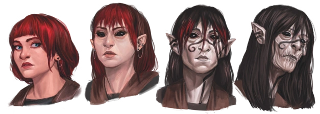

A Morte é a entidade do tempo. Ela busca os momentos vivenciados, distorcendo a percepção egóica da existência de cada indivíduo para seu próprio agrado.
A distorção temporal da Morte arruína a percepção carnal do Sangue. -Diário de Deus
Esse elemento está relacionado à diversas características como espirais, repetição, Lodo Preto e distorção temporal, além de distorcer a percepção egóica da existência de cada indivíduo. As cores que representam esse elemento são preto e tons de cinza.
No Perímetro, após a exploração da Caverna dos Cristais e do Castelo Espiral, descobre-se que além da interação com fogo que o Lodo Preto possui e que o faz queimar, também é possível acelerá-lo utilizando luz UV, petrificá-lo com eletricidade ou fazê-lo repetir infinitamente se exposto a Luz Paranormal do
Afinidade com o Elemento
Possuir uma afinidade ao elemento de Morte significa ser escolhido pela sua Entidade. Dentre as várias consequências disso, é possível citar: alteração na cor de pele, tendo um aspecto mais acinzentado, alteração na cor do cabelo, mudando para tons de preto ou branco, faixas pretas marcadas no rosto, olhos completamente pretos, sangue escurecido, envelhecimento espontâneo, reflexos aprimorados, emagrecimento, alteração na estrutura óssea, alteração na percepção temporal, além de uma personalidade mais fria e apática, tendo uma desafetação em relação ao impacto que a morte pode gerar.

Rituais
Os rituais de Morte sempre estão associados a distorção temporal e a degradação orgânica, seja pela percepção do tempo alterada fisicamente ou psicologicamente. Alguns requisitos para conjurar rituais de Morte, como cinzas humanas ou de animais, transmitem a ideia de coisas que não estão mais vivas.
Os efeitos dos rituais realçam a ideia da alteração da passagem do tempo, como o Ritual de Cicatrização, que acelera a cicatrização de uma ferida em um formato espiral. O Ritual de Consumir Manancial permite que o usuário absorva a Energia Potencial ao seu redor, aumentando sua vitalidade temporariamente.
Criaturas
As criaturas de Morte são apáticas, sempre demonstrando frieza, indiferença e movimentos inconstantes. A percepção temporal das criaturas de Morte é completamente distorcida, podendo ser extremamente lenta ou acelerada. Em alguns casos, criaturas de Morte podem acelerar sua própria percepção temporal, se tornando momentaneamente aceleradas e logo em seguida desaceleradas interinamente. Sua anatomia sempre apresenta uma forma esquelética e esguia, juntamente do característico Lodo Preto da Morte, podendo ter também formas em espirais.
O comportamento dessas criaturas é hostil. Algumas criaturas possuem uma movimentação errática, inconstante e anacrônica graças à alteração da passagem do tempo em seu próprio corpo, fazendo com que o seu movimento seja acelerado e desacelerado em instantes. Criaturas de Morte já mostraram serem capazes de realizar rituais.